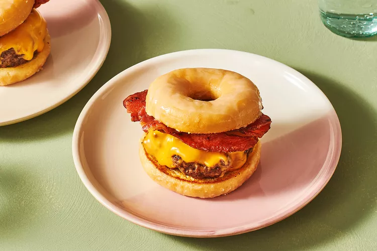

The Luther Burger: A Donut Bacon Cheeseburger 🍔

Description
Prep: 10 mins
Cook: 12 mins
Total: 22 mins
Serving: 1
So, have you heard about the Luther burger? It's kind of an interesting
story - apparently, it's named after the R&B singer Luther Vandross. The
whole thing got some buzz after it was mentioned in an episode of "The
Boondocks" back in 2006. Since then, it's become pretty popular, showing up
at all sorts of places like ballparks, state fairs, county fairs, and even
fancy restaurant menus.
Now, when it comes to cooking the beef patty for this burger, there's this
technique called the smash method. You basically press the patty down on the
grill, which is supposed to do something magical with the meat juices and
make it taste even better.
This recipe I've got here is just for one burger, but feel free to make more
if you'd like. Just a heads up though, it might not be the healthiest
choice, especially if you're watching your heart health. Oh, and if you're
looking to make it a bit healthier, you could opt for organic grass-fed
beef.
Ingredients
- 2 slices of bacon
- 1 glazed donut
- 1/3 pound of ground beef
- 1/8 teaspoon of salt, more to taste
- a pinch of freshly ground black pepper
- 2 slices of American Cheese
Steps to make it:
- Gather the ingredients
- On a large cast-iron skillet, fry the bacon until crispy
-
Remove the bacon and dry on a paper towel. Reserve some of the bacon
grease and discard the rest.
-
Cut the donut in half crosswise paying extra attention not to crush or
damage the glazed coating.
-
Meanwhile, shape the beef into a ball and sprinke the outside with salt
and pepper.
-
Return the reserved bacon grease to the skillet and heat to medium-high.
Add the seasoned ball of beef to the skillet. Let the beef ball cook
until crispy and golden brown, 3 to 5 minutes.
- Flip the ball and smash slowly so the burger stays together.
-
Let the burger cook for a few more minutes until the desired doneness is
reached, about 5 to 10 minutes.
-
Flip the burger one more time, add the cheese, and then remove it from
the heat.
- Cover the skillet until the cheese has melted, about 2 minutes.
-
Add the cheeseburger patty to the cut side of one of the doughnut
halves. Top the burger with the bacon, then close the sandwich with the
remaining doughnut half. Serve immediately.
Source